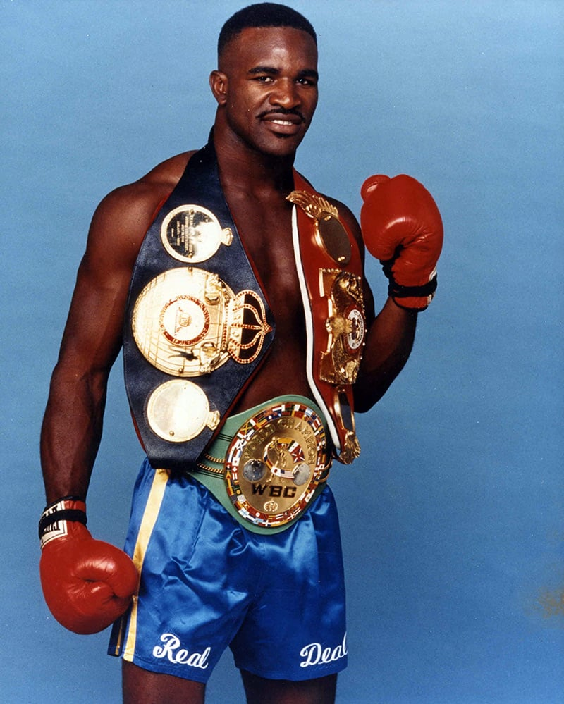

About
This site was created to showcase the greatest boxers of all time. It includes information and links to their biographies.

More Boxers
Sugar Ray Robinson
Sugar Ray Robinson was an American professional boxer who competed from 1940 to 1965. He is widely considered to be one of the greatest boxers of all time, having won the world welterweight and middleweight titles.
Floyd Mayweather
Floyd Joy Mayweather Jr. is an American former professional boxer and boxing promoter. He competed between 1996 and 2015, and made a one-fight comeback in 2017. He retired with an undefeated record and multiple world titles in five weight classes.
Joe Louis
Joseph Louis Barrow, known professionally as Joe Louis, was an American professional boxer who competed from 1934 to 1951. He reigned as the world heavyweight champion from 1937 to 1949, and is considered one of the greatest heavyweights of all time.
Rocky Marciano
Rocky Marciano, born Rocco Francis Marchegiano, was an American professional boxer who competed from 1947 to 1955. He held the world heavyweight title from 1952 to 1956 and retired undefeated as champion.
Julio César Chávez
Julio César Chávez is a Mexican former professional boxer who competed from 1980 to 2005. He is a six-time world champion in three weight divisions and for several years was considered the best pound-for-pound boxer in the world.
Manny Pacquiao
Emmanuel "Manny" Dapidran Pacquiao is a Filipino former professional boxer and politician. He is regarded as one of the greatest professional boxers of all time, becoming the only eight-division world champion in the history of boxing.
Oscar De La Hoya
Oscar De La Hoya is an American former professional boxer who competed from 1992 to 2008. He won 11 world titles in six weight classes, including the lineal championship in three weight classes.
Evander Holyfield
Evander Holyfield is an American former professional boxer who competed from 1984 to 2011. He is the only boxer in history to win the undisputed championship in two weight classes, and remains the only four-time world heavyweight champion.
Jack Dempsey
William Harrison "Jack" Dempsey, nicknamed Kid Blackie and The Manassa Mauler, was an American professional boxer who competed from 1914 to 1927. He held the world heavyweight title from 1919 to 1926 and is known for his aggressive fighting style and exceptional punching power.